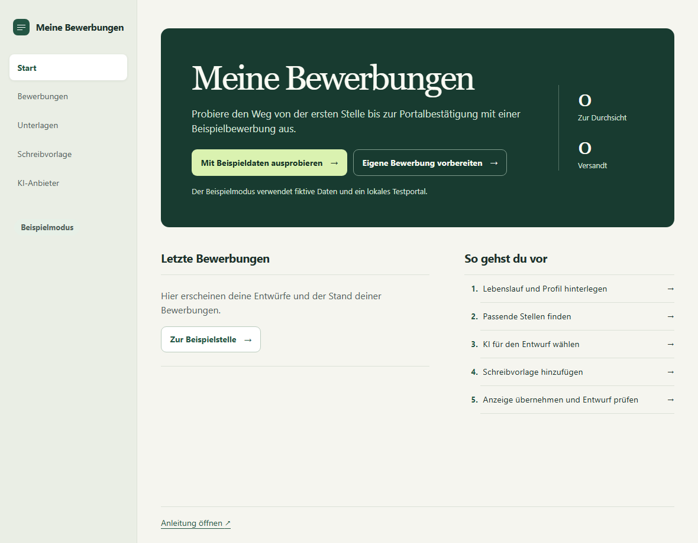
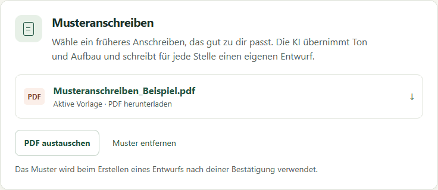
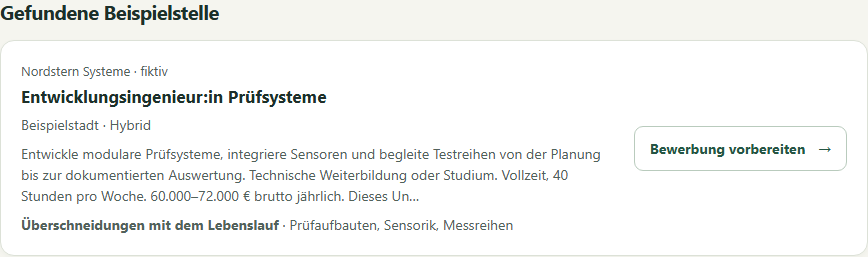
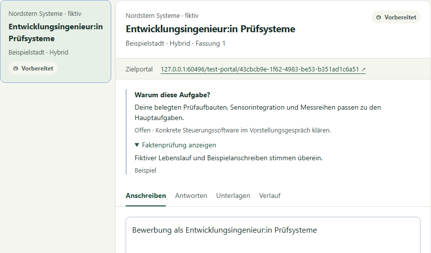
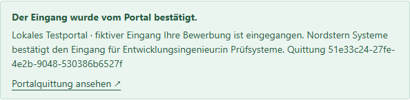

Meine Bewerbungen
Anleitung
Vom ersten Start bis zur bestätigten Bewerbung.
Starten
- Entpacke das Projekt-ZIP vollständig in einen Ordner deiner Wahl.
- Doppelklicke auf Start Windows oder Start macOS. Beim ersten Start lädt die App ihre Komponenten. Das kann einige Minuten dauern und braucht Internet.
- Die Startseite öffnet sich automatisch in deinem Standardbrowser. Wenn du den Browsertab schließt, öffnet ein weiterer Doppelklick auf die Startdatei die laufende App wieder.
Fehlt eine passende Node-Version, lädt der Starter sie ins Benutzerkonto und prüft die offizielle Prüfsumme. Offizieller Node.js-Download
Unter Windows wurde der Start aus einem entpackten Ordner mit Leerzeichen geprüft. Der Start auf macOS ist vorbereitet und noch ungeprüft.

Aus einem lokalen Chat installieren
Verwende Codex oder Claude Code mit Zugriff auf einen lokalen Projektordner. Sende den Repo-Link mit dieser Anweisung:
Installiere Meine Bewerbungen aus diesem Repository. Klone das vollständige Projekt, lies die Einrichtung und öffne meinen eigenen Arbeitsbereich im Browser. Verwende die mitgelieferten Skills und vier Agentenrollen.
Falls der Client nach dem Klonen im alten Ordner bleibt, öffne den geklonten Ordner als neues Projekt. In Claude Code rufst du /meine-bewerbungen auf. In Codex wählst du den Skill $meine-bewerbungen. Die App läuft in deinem Standardbrowser.
Du verwendest dein eigenes angemeldetes Codex- oder Claude-Code-Konto. Der Repo-Link enthält keine Konten, Schlüssel oder Bewerbungsdaten.
Mit Beispieldaten ausprobieren
- Klicke auf Mit Beispieldaten ausprobieren, dann auf Beispielstelle suchen.
- Wähle Bewerbung vorbereiten. Anschreiben, Antworten und beide PDFs sind fiktiv und bereits ausgefüllt.
- Klicke auf Prüfen & freigeben. Bestätige diese Fassung und wähle Freigegebene Bewerbung absenden.
- Bestätigt versandt und Portalquittung ansehen zeigen den Eingang im lokalen Testportal. Für die Demo brauchst du kein KI-Konto.
Eigene Bewerbung vorbereiten
1. KI-Anbieter wählen
Öffne KI-Anbieter. Unter KI-Anbieter stehen zwei Wege zur Verfügung.
- Mit ChatGPT
- Klicke bei Bedarf auf Codex installieren und dann auf Bei ChatGPT anmelden. Melde dich im von Codex geöffneten Browserfenster an. Klicke danach in der App auf Anmeldestatus prüfen. Wenn Angemeldet erscheint, gehst du weiter zu den Unterlagen. Offizielle Codex-Anleitung
- Mit Claude Code
- Öffne dieses Projekt in Claude Code, melde dich dort mit deinem eigenen Konto an und wähle in der Browser-App Claude verwenden. Bei einer Stelle klickst du auf Auftrag für Claude Code erstellen. Starte dann
/meine-bewerbungenin Claude Code und lass das Browserfenster offen. Claude Code übernimmt Schreiben und Faktenprüfung. Die Browser-App holt den fertigen Entwurf automatisch ab. Offizielle Claude-Code-Anleitung

2. Lebenslauf und Profil
Öffne Unterlagen, wähle bei Lebenslauf eine PDF und speichere im Profil mindestens Namen und E-Mail. Erfahrung, Verfügbarkeit und Suchkriterien kannst du ergänzen.
3. Schreibvorlage
Öffne Schreibvorlage und klicke auf Muster-PDF auswählen. Nimm ein früheres Anschreiben, dessen Ton zu dir passt. Steht der Dateiname unter Aktive Vorlage, kannst du zur Stellenanzeige weitergehen. PDF austauschen ersetzt das Muster für neue Entwürfe.
Hast du kein Muster, öffne Ich habe kein Musteranschreiben. Beantworte die Fragen nach einer passenden Aufgabe, deiner Motivation und dem gewünschten Ton. Klicke auf Vorlage aus meinen Antworten erstellen.

Von der Stelle bis zur Quittung
- Öffne Bewerbungen und wähle Stellen nach Lebenslauf suchen. Ort, Rollenfilter und weitere Greenhouse-Firmenlinks kannst du ergänzen. Die App durchsucht Greenhouse-Firmenportale, Ashby, Lever und Arbeitnow und vergleicht die Anzeigen lokal mit deinem Lebenslauf. Für öffentliche Jobbörsen und weitere Karriereseiten starte die zusätzliche Webrecherche mit deinem Projektchat. Wenn du eine konkrete Greenhouse-Stelle kennst, öffne Ich habe schon eine Stellenanzeige und füge den Link ein.
- Klicke auf Bewerbung vorbereiten und lies, welche Angaben für den Entwurf verwendet werden. Bestätige erst danach die Erstellung oder den Export für Claude.
- Prüfe Anschreiben, Antworten, Unterlagen und das Zielportal. Änderungen am Anschreiben speicherst du über Text & PDF speichern. Ergänzte Pflichtangaben speicherst du über Antworten speichern.
- Wähle Prüfen & freigeben, hake die Bestätigung an und klicke auf Diese Fassung freigeben. Jede Bewerbung braucht ihre eigene Freigabe. Änderungen an der Fassung erfordern eine neue.
- Klicke auf Freigegebene Bewerbung absenden. Öffne bei Bestätigt versandt die Portalquittung oder sieh unter Verlauf nach.
So arbeiten die vier Rollen
- Recherche
- Lädt veröffentlichte Anzeigen und zeigt Überschneidungen zum Lebenslauf an.
- Lebenslauf und Anschreiben
- Analysiert die Stelle und wählt passende Aufgaben und Erfahrungen aus deinem Lebenslauf. Die Vorlage gibt Ton und Aufbau vor. Deine Original-PDF bleibt erhalten.
- Faktenprüfung
- Prüft Belege, Formulierungen und Formularantworten. Bei unbelegten Angaben oder verzerrten Aussagen hält die App den Entwurf an.
- Portal
- Füllt das freigegebene Formular aus, hängt beide PDFs an und löst den Versand aus. Automatisiert unterstützt sind Greenhouse-Formulare, deren Felder die App erkennt.




Mit Übersicht als HTML speichern lädst du eine Momentaufnahme mit Firma, Stelle und Status herunter. Öffne sie per Doppelklick. Sie funktioniert ohne die App und aktualisiert sich beim erneuten Export.
Daten und Kontingent
Das Programm läuft auf deinem Gerät im Browser. Unterlagen, Entwürfe und der Verlauf liegen im Datenordner deines Benutzerkontos. Die Zugangsdaten bleiben bei Codex und Claude. Die App hat dafür kein eigenes Passwortfeld.
Für einen Entwurf verwenden die beiden KI-Rollen den aus Lebenslauf und Muster gelesenen Text, deinen Namen, ergänzte Hinweise sowie die öffentliche Anzeige und ihre fachlichen Fragen. Prüfe, welche Kontaktdaten im PDF-Text stehen. Die Bewerbungs-PDFs gehen an das Portal, wenn du den freigegebenen Versand startest.
Bei ChatGPT gilt das Kontingent der in Codex angemeldeten Person. Bei Claude Code gilt das Kontingent des dort angemeldeten Kontos. Beide Kontingente prüfst du beim jeweiligen Anbieter. Die lokale Quellensuche und HTML-Übersicht benötigen keinen Modellaufruf. Die zusätzliche Webrecherche läuft im angemeldeten Projektchat. Codex-Nutzungslimits · Claude-Anmeldebedingungen
Wenn etwas hakt
- Browser öffnet sich nicht
- Warte, bis das Startfenster eine Adresse anzeigt. Kopiere die Adresse in deinen Browser oder öffne die Startdatei erneut.
- Codex meldet „Anmeldung erforderlich“ oder lehnt einen Entwurf ab
- Melde dich erneut an und prüfe den Status. Prüfe bei einer Ablehnung auch Kontingent und Berechtigung deines gewählten ChatGPT-Arbeitsbereichs.
- PDF lässt sich nicht lesen
- Wähle eine PDF bis 8 MB mit auswählbarem Text und ohne Passwort. Für ein gescanntes Muster kannst du stattdessen die drei Fragen beantworten.
- Link oder Formular wird nicht unterstützt
- Nutze den direkten Link zu einer einzelnen Greenhouse-Stelle. Bei einem anderen Portal oder fehlendem Feld für das Anschreiben öffnest du die Online-Bewerbung der Firma.
- Angehalten
- Lies den Grund im Entwurf. Ein CAPTCHA, ein Login oder eine zusätzliche Einwilligung benötigt deine persönliche Prüfung.
- Ausgang unklar
- Prüfe die Eingangsbestätigung im Portal oder im Postfach, bevor du erneut absendest. Die App wiederholt den Versand in diesem Zustand nicht.